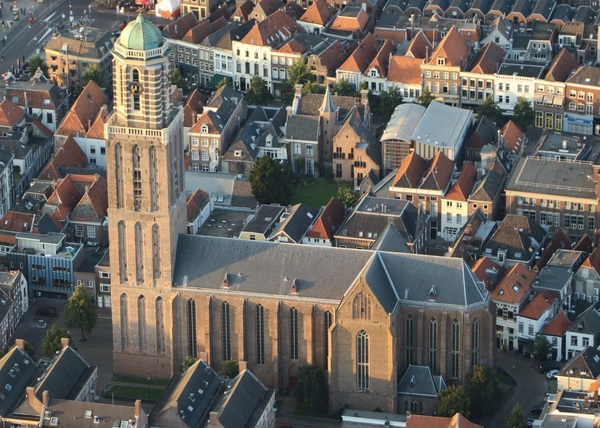
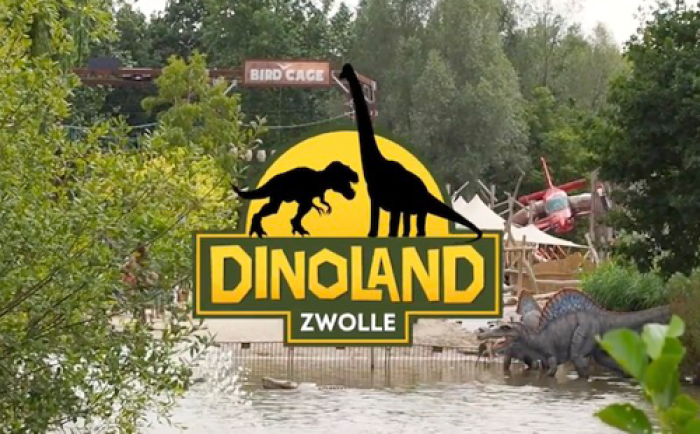

Feitjes over Zwolle
Zwolle is van oorsprong een vestingstad. Sinds 1230 bezit het stadsrechten. De Sassenpoort en de Peperbus worden meestal als eerste monument genoemd. Maar er zijn er meer, waaronder ook veel kerken. De stad dankt veel aan haar rijke Hanzehistorie en aan haar rol bij de verspreiding van de geestelijke stroming van de Moderne Devotie. Na de Franse Tijd waren de verdedigingswerken overbodig geworden en werden bijna alle poorten afgebroken, maar de oorspronkelijke structuur van de binnenstad bleef grotendeels intact. Bron: peperbus-zwolle.nl- Zwolle heeft een oppervlakte van 119,4 vierkante kilometer.
- Zwolle telt 130.668 inwoners
- De bijnaam voor Zwollenaren is Blauwvingers
- Zwolle is een Hanzestad
- Zwolle ligt aan de IJssel

Onze Lieve Vrouwetoren - De Peperbus
De Onze Lieve Vrouwetoren of Peperbus is de stadstoren van de stad Zwolle. De 75 meter hoge Onze Lieve Vrouwetoren is de klokkentoren van de Basiliek van Onze Lieve Vrouw Tenhemelopneming. Deze website geeft vooral aandacht aan de toren en de klokken, maar ook aan de kerk en de stad. De kerk is te bezichtigen, de toren te beklimmen.De basiliek
De Onze Lieve Vrouwe Basiliek is een laat-gotische middeleeuwse kruiskerk. Tijdens de Reformatie is zij in onbruik geraakt. Tijdens de Franse Tijd kwam zij weer in gebruik bij de rooms-katholieken. Zij wordt ook gebruikt voor muzikale uitvoeringen, met koren en het monumentale MaarschalkerweerdorgelBezichtigingen en rondleidingen
De toren is tijdens openstellingen van de basiliek te beklimmen. De kerk is te bezichtigen op alle werk- en zaterdagen; Voor grote groepen kunnen rondleidingen worden gegeven.De toren
Vanuit welke richting je de stad ook nadert: van verre torent de Peperbus uit boven Zwolle. De Zwollenaar zegt blij te zijn bij terugkeer de Peperbus weer te zien. Vele steden hebben fraaie torens, maar alleen Zwolle heeft zijn Peperbus.De klokken
De oudste klok die nog in de toren hangt komt van de wereldberoemde klokkengieter Geert van Wou. Klokken verdwenen, andere klokken werden weer toegevoegd. Pas in 1930 werd er in de Peperbustoren een carillon geplaatst. De toren is van de gemeente, het carillon ook. Maar de Zwolse Beiaard Stichting organiseert de concerten. Bron: peperbus-zwolle.nl

Bron: Tripadvisor
Dinoland
In het in 2016 geopende themapark Dinoland Zwolle kun je weer even terug in de tijd van de dinosaurussen. Je waant je tussen soms tientallen meters lange exemplaren en leert van alles over ze. Meer dan 100 dinosaurussen staan er in het park en een speciaal aangelegd dinopad voert je langs verschillende soorten uit de tijdperken Trias, Jura en Krijt. Van Plateosaurus tot aan de Parasaurolophus. Natuurlijk kunnen ook de bekende T-Rex en Triceratops niet ontbreken. Naast de dinosaurussen zijn er diverse activiteiten die leuk zijn voor kinderen en volwassenen, zoals een hoogte- en laagteparcours, klimtoren, minigolf en lasergamen.Bron: Tripadvisor